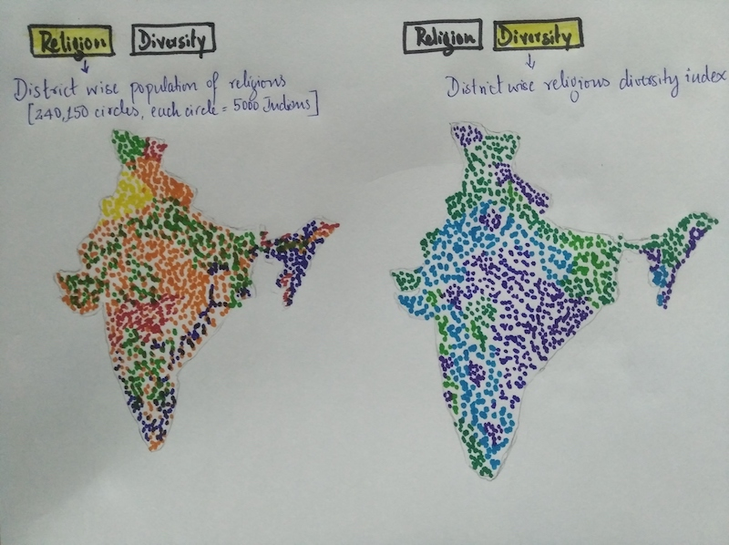

Insights into population and diversity of various religions across all the districts of India.
February 2019
India is the most diverse country in the entire world. Due to its geographic position of being between middle east and south east Asia, the country’s religious diversity is also very unique. While this fact is well known, there have been very few attempts to visualise this data. This project aims at showcasing the religious diversity of India at district level and offers few fascinating new insights into it.
This project uses dots to represents population. There are a total of 240,150 dots. Each dot represents 5,000 Indians. The reader can zoom in to explore the diversity and the religions in different regions of the country. There are two buttons. By clicking on Religion, the reader can view the district wise population of different religions. And by clicking on Diversity the reader can view the district wise religious diversity index across the country. The diversity index for districts were computed using Simpson index which is a statistical measure used to determine the diversity in an area given the population distribution of different groups in that area.

The geojson data for district boundaries in India was obtained from here. The data for population of various religions for each district in India comes from 2011 Census. The dots are randomly placed within the district's boundaries. As a result, the position is accurate upto only district level and not taluk or any sub-district levels. Also because of random placement, some of the dots may get placed over nearby water bodies.
It is interesting to see how the religious diversity is low in central parts and east coast of India.
As part of a future project, it will be interesting to see if this diversity can be owed to numerous historical events of the past (conquests, contact with merchants etc).
Data access
Unlike for developed nations, it was quite difficult to get data for India at a very detailed level.After several searches, only district level religion data was obtained. This limited the precision of the map to district level.
Micro vs Macro
This is a common trade off in data visualisation. Ideally while zooming in to a given region, it is desirable to see very detailed data. But this will mean that at a macro level (when zoomed out) when looking at entire country, the amount of data to show will be enormous and this will result in more time for data to load.Conversely if less datapoint is used, precision is lost while zooming in to a particular area.
A common way to overcome this is to vary the number of datapoint adaptively based on the zoom index such that fewer datapoint is used while completely zoomed out and as an user zooms into a region, more and more datapoint are used. But this technique was not used in this project.
Precise placing of data
The data available for this project was at district level. The dots representing the people are randomly placed within the district's boundaries. Also because of random placement, some of the dots got placed over nearby water bodies. This was unavoidable and ended up being unaddressed in this project.
Washington post article: America is more diverse than ever — but still segregated